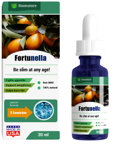

Prueba:
Cómo perder sobrepeso
¿ Alguna vez o tal vez dos, o incluso tres veces ha probado una dieta de diferentes programas de nutrición, ha suscrito al gimnasio y ha descargado aplicaciones de fitness, pero el peso aún no desaparece? Tome nuestra prueba y descubra la mejor manera de perder peso para usted.
PASAR PRUEBAIndique su edad
años
Indique su peso
kg
Levantarse para trabajar por la mañana, ¿cómo se siente?
CONTINUAR¿Cuál es el estado de tu cabello y uñas?
CONTINUAR¿Con qué frecuencia practicas deporte?
CONTINUAR¿Qué incluye tu norma de alimentación?
CONTINUAR¿Come de noche?
CONTINUAR¿Qué opinas de los dulces?
CONTINUAR¿Cuántos kilos quieres perder?
CONTINUARGotas naturales para adelgazar Fortunella

Deshacerse de los kilos de más le ayudarán gotas Fortunella. El remedio es un concentrado de ocho componentes activos, entre los cuales fortunella es conocida por sus propiedades para quemar grasa. Con la ingesta regular de gotas, puede perder peso en poco tiempo sin cambiar su estilo de vida.
Su 50% de descuento es válido hasta el final del día
49€
98€